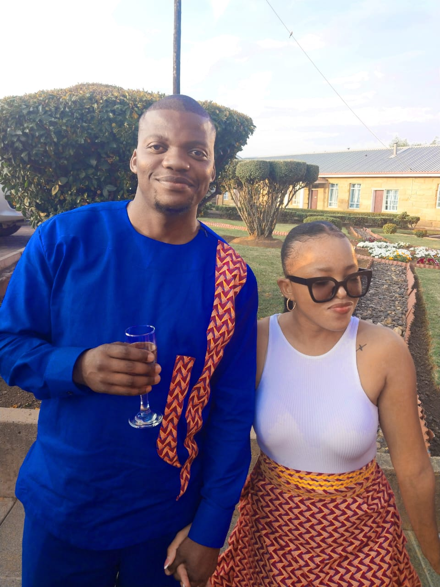

“Some loves are loud.
Ours feels like a quiet library —
warm, timeless, sacred.”
To Minah Lekau,
Loving you feels like discovering a rare manuscript —
one written with care, depth, and purpose.
You move through life with intention.
With thought.
With quiet brilliance.
I admire your hunger for knowledge,
your pursuit of research,
your dream of standing before students one day —
not just teaching,
but shaping minds.
I see the lecturer in you already.
The professor.
The woman whose name will one day be cited
in papers and journals.
And while you build your academic legacy,
I will be building something too —
a life beside you.
We will travel.
To old European streets.
To wooden cabins with rustic furniture.
To soft mornings where coffee and research papers
share the same table.
I love you not just in this moment —
but in the long, patient future we are creating.
Always yours,
Seitlheko

In every future I imagine —
it is you walking beside me.
And one day, when the timing is gentle and right…
I will ask you to walk beside me forever.